ユーザ定義フィット関数
UserDef-FitFunc
概要
200以上の組み込みフィット関数に加えて、ユーザ自身で作成したフィット関数を作成することが出来ます。以下のように多くのOriginツールは、ユーザ独自の関数でのフィッティングをサポートしています。
- Simple Fit アプリ
- Simple Fit アプリは、y = f(x)形式で構成される簡単な関数でしフィットするより便利な方法を提供します。関数式を入力するもしくは既存の関数を選択し、初期値を指定するだけで、すぐにフィット結果をレポート出力します。この項では、このアプリの使い方を学べます。
- Note:Simple FitアプリはOriginにプリインストールされており、グラフウィンドウをアクティブにしてアプリギャラリーから呼び出すことができます。
- クイックフィットガジェット
- クイックフィットガジェットは、詳細な設定まで可能だが、少々複雑な線形フィットダイアログ及び非線形曲線フィットダイアログを開くことなく、線形及び非線形の両方を簡単に実行できる別の方法です。このガジェットでフィットプロセスを始めるには、まず関数リストに作成した関数を追加する必要があります。
- NLFit ツール
- NLFit ツールはウィザード方式で、より複雑なフィット関数を定義し、フィットの工程をあらゆる可能な方法で制御することが出来ます。NLFit ツールで、ユーザ定義関数をフィットするには、まず、フィット関数ビルダー で関数を作成します。
このチュートリアルでは、主にフィット関数ビルダーでのフィット関数の作成の仕方を図解し、NLFit ツールを使って、カーブフィットに必要なパラメータを定義して、フィットを実行するかを説明します。
必要なOriginのバージョン:Origin 2016 SR0以降
学習する項目
このチュートリアルでは、以下の項目について説明します。
- ユーザ定義フィット関数を作成する
- ユーザ定義フィット関数で非線形曲線フィットを実行する
フィット関数の作成と曲線フィットの実行
<Origin EXE Folder>\Samples\Curve Fitting\ のパスにある、ConcentrationCurve.dat のデータを使ってフィットを実行します。
次の様にフィット関数は作成され使用されます。
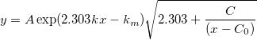
ここで、
 ：従属変数
：従属変数
 ：独立変数
：独立変数
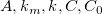 はすべてフィットパラメータです。
方法 1 - Simple Fit アプリの使用
 ボタンをクリックして<Origin インストールフォルダ>\Samples\Curve Fitting\ にあるConcentrationCurve.datをインポートします。
ボタンをクリックして<Origin インストールフォルダ>\Samples\Curve Fitting\ にあるConcentrationCurve.datをインポートします。
- B列を選択して
 ボタンをクリックし、散布図を作図します。
ボタンをクリックし、散布図を作図します。
- 解析：フィット：Simple Fitと選択し、Simple Fitアプリを開きます。非線形タブに切り替え、y(x)=ボックスに式を入力します。そしてそのとき、パラメータテーブルが表示され、パラメータの初期値を入力できます。
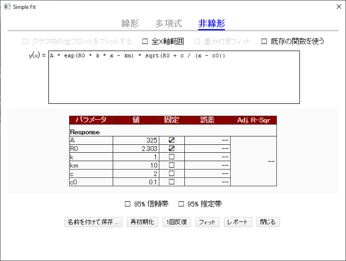
- 方程式を入力し、パラメータを初期化して修正したら、フィットボタンをクリックして、先ほど定義した関数で曲線をフィットさせます。もちろん、1回反復ボタンを1回ずつクリックすると、フィッティングの傾向を確認できます。
- 名前を付けて保存...をクリックして、この関数を保存してさらに使用することができます。閉じるボタンをクリックし、フィッティング結果を確認します。
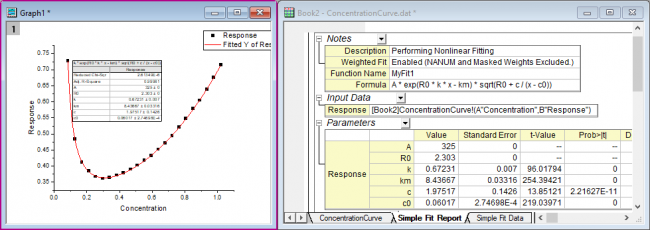
方法 2 - フィット関数オーガナイザとNLFitツールの使用
ステップ1 - フィット関数オーガナイザでフィット関数を作成する
このセクションでは、フィット関数ビルダーでユーザ定義関数を作成する方法を説明します。他のツール、フィット関数オーガナイザーでも、ユーザ定義関数を作成することが出来ます。ツール：フィット関数オーガナイザー と選択、またはF9をキーボードで押してダイアログを開きます。
- Originを起動し、ツール：フィット関数ビルダーを選択（またはF8キーを押す）して、フィット関数ビルダを開きます。
- 処理のゴールページで、新しい関数の作成を選択し、進むボタンをクリックします。
- 関数と関数形式のページでは、下図のように設定を変更し、進むボタンをクリックします。
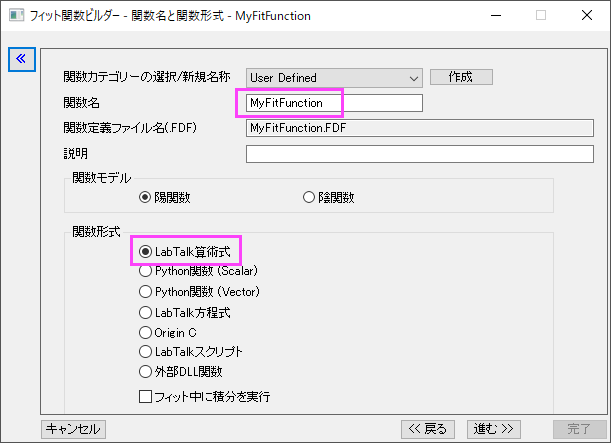
- 変数とパラメータページで、変数とパラメータ名を下図のように入力し、パラメータボックスの進む
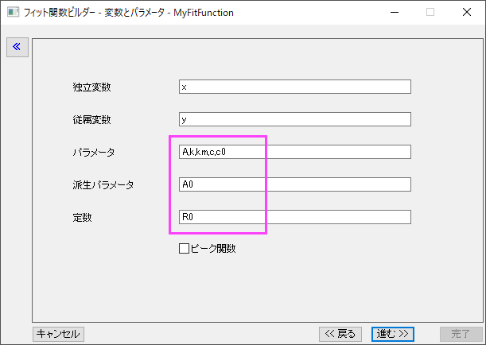
をクリックします。区切りにはカンマ”,”を使います。
- 式形式の関数ページで、以下の式を関数内容に入力します。
A*exp(R0*k*x-km)*sqrt(R0+c/(x-c0))
- 定数タブを開き、R0の値を2.303に設定します。
- 予測された初期値を、このデータと関数に基づいたパラメータに与えます。
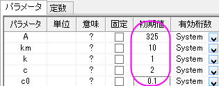
Note：フィット実行時に異なる初期値を入力することもできます。
- 評価ボタン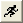をクリックして、関数が動作するか確認します（動作する場合、実際のyの値が返されます）。
Note：最初の操作で、関数形式としてOriginCを使用すると、この操作画面で関数をコンパイルして何かエラーがないか確認できます。これは特に括弧の合致を調べるのに便利です。
- 進むを3度クリックして、派生パラメータページを開きます。
- このページで、派生パラメータA0を定義し、派生パラメータ定義式を入力します。
A0=-A*exp(km)*1E-4
- 完了ボタンをクリックして関数の定義を終了します。関数ファイル(.fdf) は、ユーザファイルフォルダに保存されます。
 | フィット関数ビルダーを使用して一度定義した関数を、あとから編集することもできます（その場合、最初に表示される処理のゴールページでフィット関数の編集を選択）。また、フィット関数オーガナイザを使用することもできます。
|
ステップ2 - NLFitツールで曲線フィットを実行する
- ボタンをクリックして<Origin インストールフォルダ>\Samples\Curve Fitting\ にあるConcentrationCurve.datをインポートします。
- B列を選択してボタンをクリックし、散布図を作図します。
- グラフウィンドウがアクティブ状態で、解析：フィット：非線形曲線フィット...メニューを選択し、NLFit ダイアログを開きます。
- 関数選択のページのカテゴリをUser Definedにし、関数をMyFitFunc(User) にします。
 ボタンをクリックしてデータをフィットします。
ボタンをクリックしてデータをフィットします。
- メッセージタブで、パラメータ過剰によりフィットが収束しなかったというエラーメッセージが表示されます。
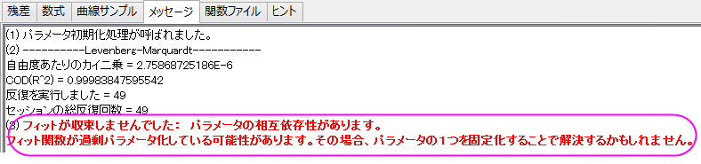
- パラメータAとkmで、相互依存性を持っているため、どちらか1つを修正することでこの問題を解決します。ここではAを修正します。
- パラメータタブを開き、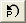をクリックして初期値を呼び出します。パラメータAの固定のチェックボックスにチェックを付けます。
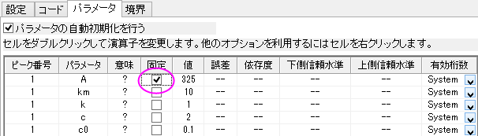
- フィットボタンをクリックしてフィットを実行します。
- グラフにはフィット曲線が追加されます。
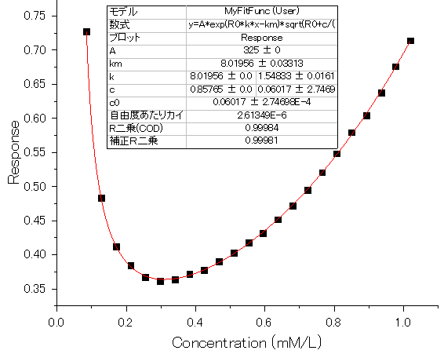
- また、結果レポートシートか作成され、すべてのパラメータ値（派生パラメータを含む）がパラメータ表に出力されます。
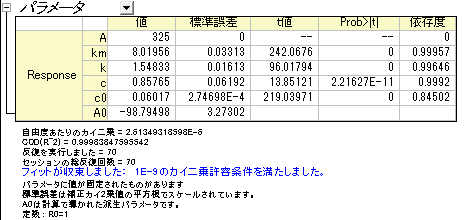
| パラメータ過剰が発生した場合、
異なるパラメータを固定して複数のフィット結果を取得し、その後、解析：フィット：モデルの比較ツールにより統計的にフィットモデルを比較することができます。
|